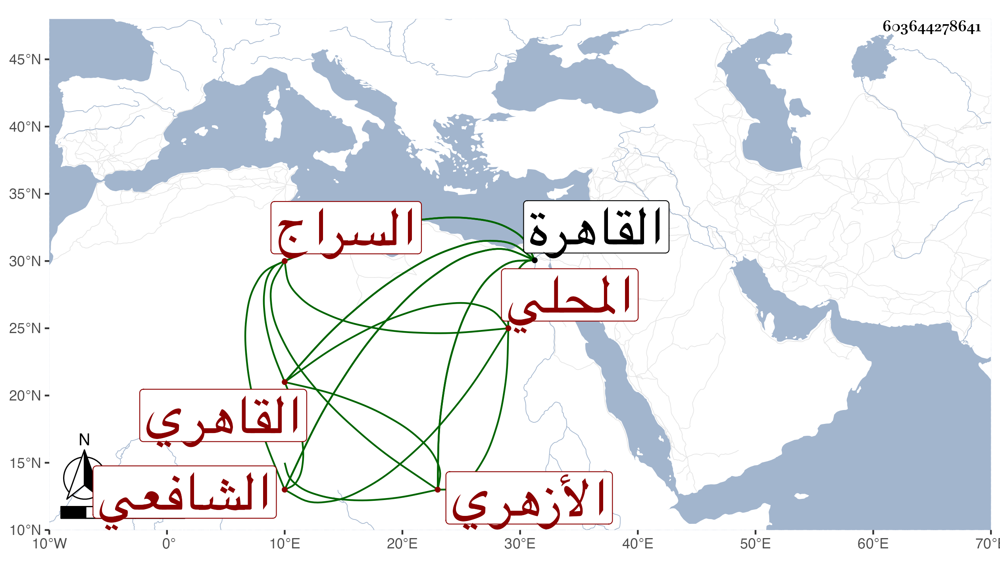

0902Sakhawi.DawLamic.ITO20230111-ara1.EIS1600.603644278641
Biography ID: 603644278641
236
عمر بن أحمد بن علي السراج المحلي ثم القاهري الأزهري الشافعي والد عبد الناصر الماضي ويعرف في بلده بابن الدبيب بمهملة ثم موحدتين بينهما تحتانية مصغر وفي القاهرة بالمحلي . قدم القاهرة فلازم القاياتي وشيخنا وآخرين وتميز وشارك في الفضائل وتكسب في البز بتربيعة الجملون وكان يتكلم على العامة ويبحث في الدروس الحافلة وربما أقرأ . مات في سنة سبع وستين تخمينا وقد قارب السبعين ظنا رحمه الله .
